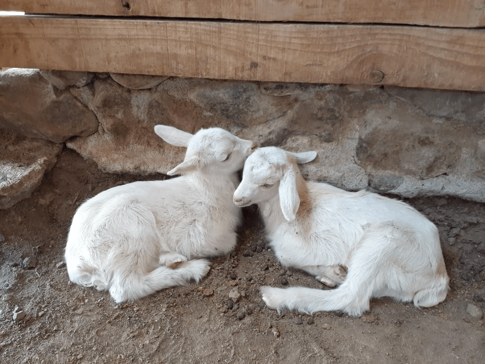

Esta diversificación responde a una estrategia para enfrentar el duro escenario económico y ambiental que afecta al rubro agropecuario por efectos de la sequía y el alza de precios de los insumos para mantener a sus animales y elaborar sus productos.

Compartir una experiencia completa de la vida en el campo es el nuevo desafío para el cual se están preparando numerosos capricultores de la Región de Coquimbo, quienes se han visto duramente afectados por los efectos de la crisis hídrica que azota a numerosas regiones del país. Por esto, organismos vinculados a esta actividad productiva se encuentran planificando una estrategia de diversificación de sus productos y servicios, con el fin de construir una experiencia turística en torno al particular estilo de vida rural, la crianza de animales, la elaboración de quesos y la belleza árida de los paisajes que habitan.
La iniciativa provino de uno de los comités gestores del programa Transforma Caprino, correspondiente a «Negocios y Turismo», conformado por representantes del Gobierno Regional; del Servicio Nacional de Turismo (Sernatur); de las municipalidades de Canela, Monte Patria y Combarbalá; empresarios caprinos; del rubro turístico y de diseño, entre otros.
Ingrid
Haselbauer, médico veterinario y gerente del Transforma Caprino,
indicó que «esto
puede parecer fácil, pero para lograr una oferta seria necesitamos
expertos que nos guíen y nos indiquen qué es lo que necesitan los
emprendedores capricultores para poder construir una experiencia
atractiva y comercializable. Estamos trabajando con un grupo de
productores que tienen condiciones e interés para desarrollar el
tema y para eso nuestros expertos analizan las brechas existentes, lo
que nos permitirá trabajar
abordar los distintos frentes para
poder reducirlas
y construir una propuesta final con mayor perspectiva de éxito».
Justamente, la empresa que está asesorando a este comité es Touristed, un operador turístico de la región, quien ya finalizó una primera etapa de diagnóstico que permitirá estructurar una estrategia de desarrollo individual y comunal.
Patricio
Vega, fundador de Touristed, señaló que «nuestra
primera misión con los productores fue conocerlos y para eso los
visitamos a cada uno, con el fin de ver
ser
testigos de cómo funcionan cada una de sus empresas, cuáles son sus
expectativas, sus objetivos y su potencial para entrar al rubro
turístico. Una segunda labor, que es donde nos encontramos
actualmente, consiste en elaborar un plan de trabajo basado en el
diagnóstico anterior, con el fin de planificar
proponer acciones en pos del desarrollo turístico de estos
productores».
Carla Díaz, profesional de desarrollo de Sernatur, explicó «esta iniciativa tiene un trasfondo muy poderoso que tiene que ver con diversificar la economía de las comunidades rurales que mantienen viva una actividad ancestral, como es la capricultura. Poder diseñar experiencias en torno a esto y ofrecerlo a los turistas va a abrir un abanico de posibilidades y nos permitirá, en un futuro, poder integrarla a la oferta oficial de turismo en la Región de Coquimbo, tal como hoy son otros atractivos característicos de esta zona».
Son alrededor de diez los socios del programa que están participando de esta iniciativa y que han visto en el turismo una posibilidad de abrir sus líneas de negocios y de compartir su día a día con personas que gustan del turismo rural o agroturismo.
Tal es el caso de Jorge Villalobos, un capricultor que vio en el turismo una posibilidad real de diversificar su actividad económica. «Apuntar al turismo es una manera de dar a conocer nuestra empresa, teniendo la posibilidad de traer aquí mismo a los turistas y que vean y vivan cómo es el día a día de un capricultor, cómo se elaboran los quesos, cómo se crían a los animalitos, cómo son nuestras instalaciones… es una experiencia muy distinta a comprar un queso y ya», dijo.
Rodrigo Gutiérrez, coordinador regional del Programa de Zonas Rezagadas, señaló que «es muy relevante esta interrelación que se está dando entre los servicios públicos y privados para potenciar la actividad caprina. La única forma de desarrollo real es cuando se trabaja con todos los actores que se involucran en el tema, para poder generar un cambio en la cultura y en la forma de trabajar de este rubro que si bien es cierto, es ancestral, también es relevante que debe desarrollarse cada vez más en la parte productiva».
Transforma Caprino es un programa de Corfo, financiado por el Gobierno Regional, a través del Programa Gestión Territorial de Zonas Rezagadas, que busca impulsar la cadena de valor del rubro caprino. Actualmente, está focalizado en las comunas de Punitaqui, Monte Patria, Combarbalá, Canela, entre otras. Para más información, es posible visitar sus redes sociales, en Facebook, Instagram y Twitter.